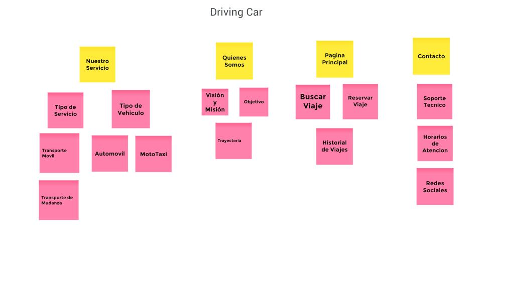
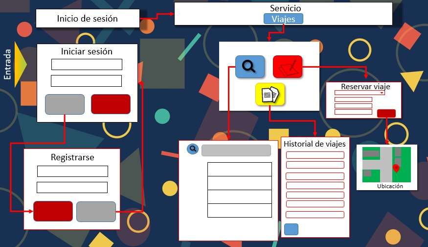

CARD SORTING
Mediante varios pasos seguidos para la realizacion del card sorting, todos los integrantes del equipo aportaron ideas para determinar los aspectos que incluirian cada nota puesta, de esta forma se concluyo un card sorting que se muesta de la siguiente imagen:

FLUJO DE NAVEGACION
Para la realizacion de este flujo de navegacion se tomaron en cuenta de varias etapas que un usuario sigue para solicitar y utilizar servicios de transporte, como un viaje en normal o un viaje compartido.

PAGINAS RECOMENDADAS
https://tic-290045.wixsite.com/my-site
https://tic290103.wordpress.com
https://comesano.netlify.app